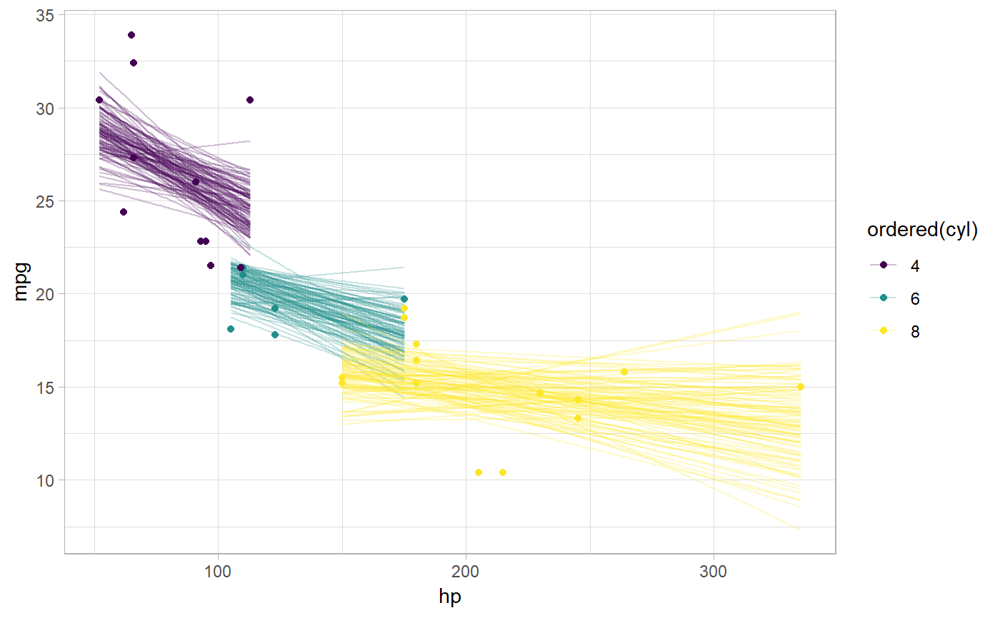

Given a tidy-format data frame of draws with a column indexing each draw, subsample the data frame to a given size based on a column indexing draws, ensuring that rows in sub-groups of a grouped data frame are sampled from the same draws.
sample_draws(data, n, draw = ".draw")
| data | Data frame to sample from |
|---|---|
| n | The number of draws to select |
| draw | The name of the column indexing the draws |
sample_draws() makes it easier to sub-sample a grouped, tidy-format data frame of draws. On a grouped data frame,
the naive approach of using filter with the .draw column will give incorrect results as it will
select a different sample within each group. sample_draws() ensures the same sample is selected within
each group.
# \donttest{ library(ggplot2) library(dplyr) if ( require("rstanarm", quietly = TRUE) && require("modelr", quietly = TRUE) ) { theme_set(theme_light()) m_mpg = stan_glm(mpg ~ hp * cyl, data = mtcars, # 1 chain / few iterations just so example runs quickly # do not use in practice chains = 1, iter = 500) # draw 100 fit lines from the posterior and overplot them mtcars %>% group_by(cyl) %>% data_grid(hp = seq_range(hp, n = 101)) %>% add_fitted_draws(m_mpg) %>% sample_draws(100) %>% ggplot(aes(x = hp, y = mpg, color = ordered(cyl))) + geom_line(aes(y = .value, group = paste(cyl, .draw)), alpha = 0.25) + geom_point(data = mtcars) }#> #> SAMPLING FOR MODEL 'continuous' NOW (CHAIN 1). #> Chain 1: #> Chain 1: Gradient evaluation took 0 seconds #> Chain 1: 1000 transitions using 10 leapfrog steps per transition would take 0 seconds. #> Chain 1: Adjust your expectations accordingly! #> Chain 1: #> Chain 1: #> Chain 1: Iteration: 1 / 500 [ 0%] (Warmup) #> Chain 1: Iteration: 50 / 500 [ 10%] (Warmup) #> Chain 1: Iteration: 100 / 500 [ 20%] (Warmup) #> Chain 1: Iteration: 150 / 500 [ 30%] (Warmup) #> Chain 1: Iteration: 200 / 500 [ 40%] (Warmup) #> Chain 1: Iteration: 250 / 500 [ 50%] (Warmup) #> Chain 1: Iteration: 251 / 500 [ 50%] (Sampling) #> Chain 1: Iteration: 300 / 500 [ 60%] (Sampling) #> Chain 1: Iteration: 350 / 500 [ 70%] (Sampling) #> Chain 1: Iteration: 400 / 500 [ 80%] (Sampling) #> Chain 1: Iteration: 450 / 500 [ 90%] (Sampling) #> Chain 1: Iteration: 500 / 500 [100%] (Sampling) #> Chain 1: #> Chain 1: Elapsed Time: 0.085 seconds (Warm-up) #> Chain 1: 0.068 seconds (Sampling) #> Chain 1: 0.153 seconds (Total) #> Chain 1:#> Warning: Bulk Effective Samples Size (ESS) is too low, indicating posterior means and medians may be unreliable. #> Running the chains for more iterations may help. See #> http://mc-stan.org/misc/warnings.html#bulk-ess#> Warning: Tail Effective Samples Size (ESS) is too low, indicating posterior variances and tail quantiles may be unreliable. #> Running the chains for more iterations may help. See #> http://mc-stan.org/misc/warnings.html#tail-ess# }